QUINTA EDICIÓN · 2026 · EN CAMINO
— transmisión interceptada —
! MENSAJE RECIBIDO
Este mensaje viene de Forjaversario ████████████
Este año vamos a ████████████████████
Por favor ayúdennos a recuperar ████████████
Búscalos e informa al ████████████ de inmediato.
¡Todos contamos contigo!
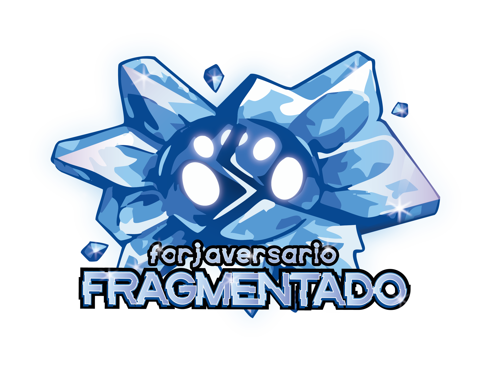
ARCHIVO CLASIFICADO · NIVEL 5 · ACCESO RESTRINGIDO
— lo que sabemos hasta ahora —
Todo comenzó cuando la señal de Forjaversario empezó a fragmentarse.
Nadie sabe exactamente cuándo ocurrió. Un día, los registros de la comunidad comenzaron a mostrar
anomalías — fechas duplicadas, mensajes que llegaban desde dimensiones paralelas,
versiones alternativas de eventos que nunca sucedieron.
Los investigadores de Forjadores Hispanos detectaron la primera fractura el
██ de ██████ de 2026. Para entonces, ya era demasiado tarde.
Alguien — o algo — había comenzado a reescribir la historia.
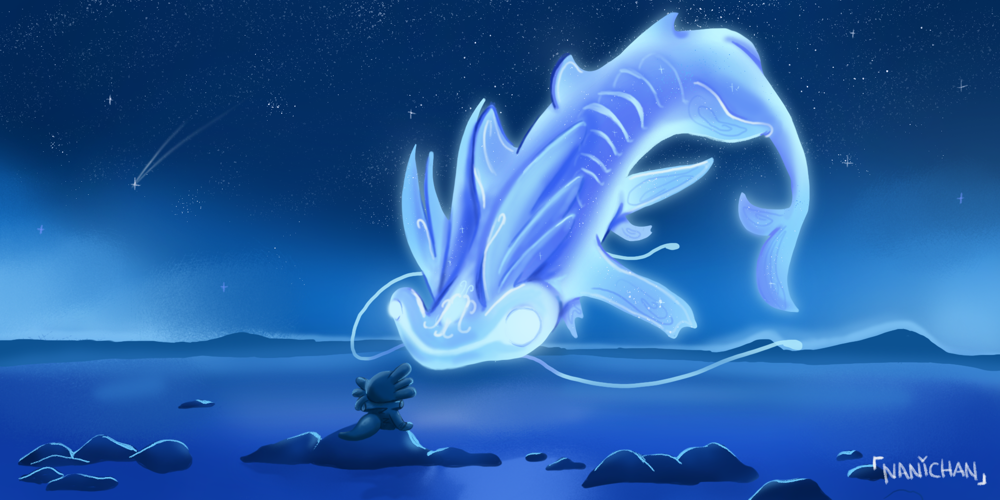
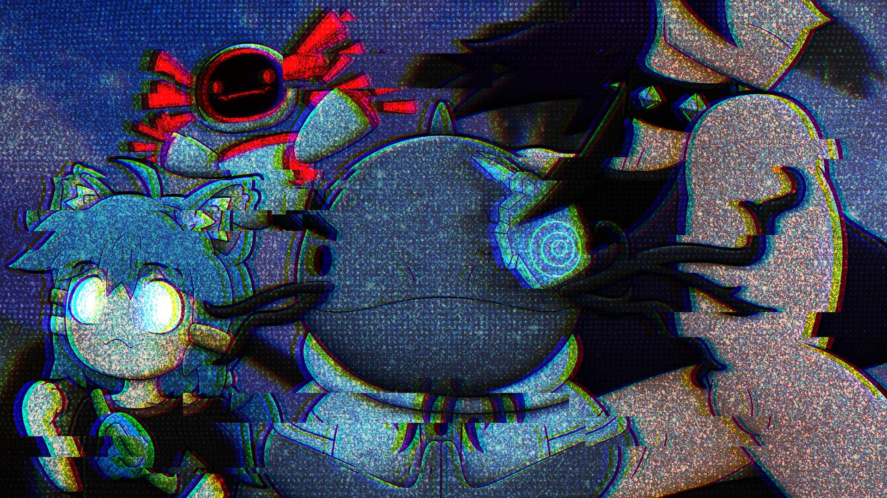
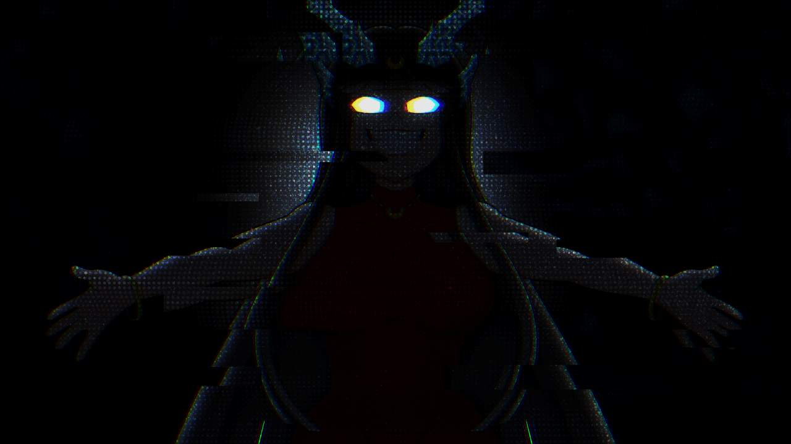
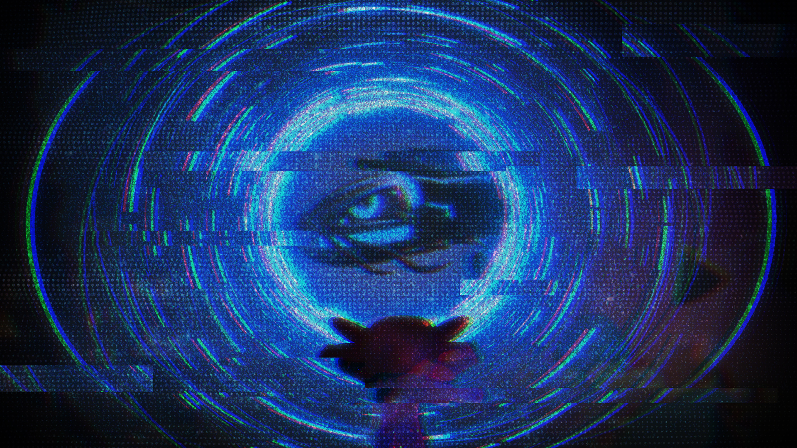
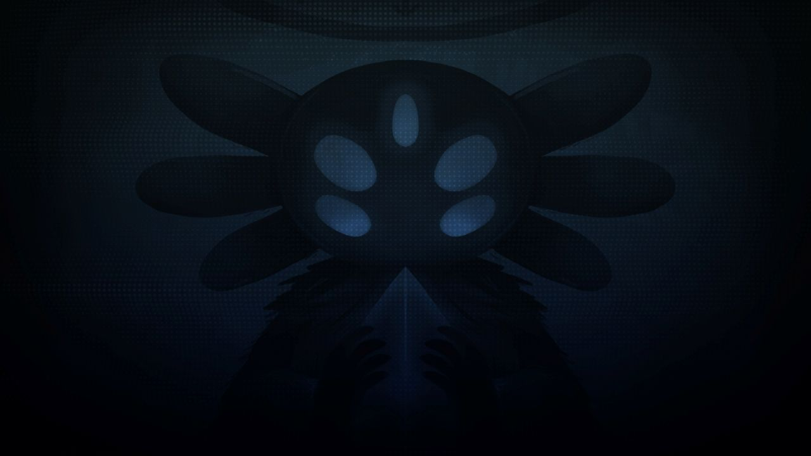
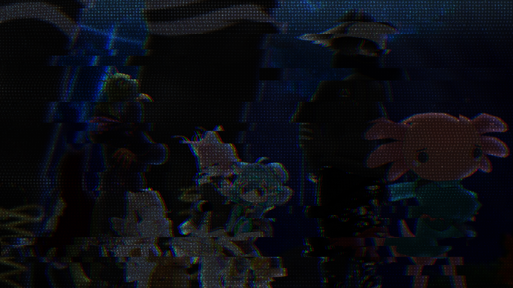
Los sistemas de comunicación de Forjadores comenzaron a recibir señales de una fuente desconocida. Los mensajes llegaban fragmentados, como si vinieran de otro tiempo.
Se identificaron ████ fragmentos dispersos a través de dimensiones paralelas. Cada uno contiene una pieza de la verdad sobre lo que realmente ocurrió durante el Forjaversario ████████.
La comunidad debe reunirse para recuperar los fragmentos antes de que ████████████████ complete su plan. El tiempo se acaba.
¿Estás listo para unirte a la misión?
Ver Forjaversario 2026 →HISTORIA
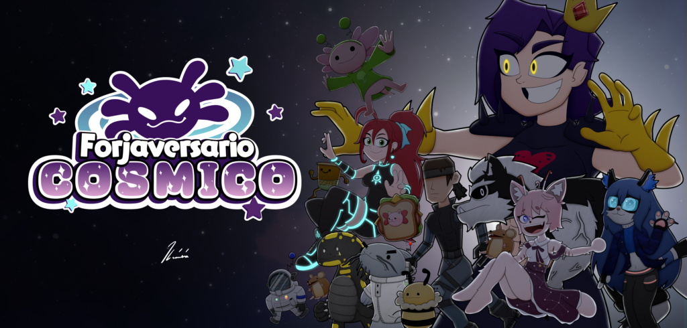
2025 · 4ª Edición
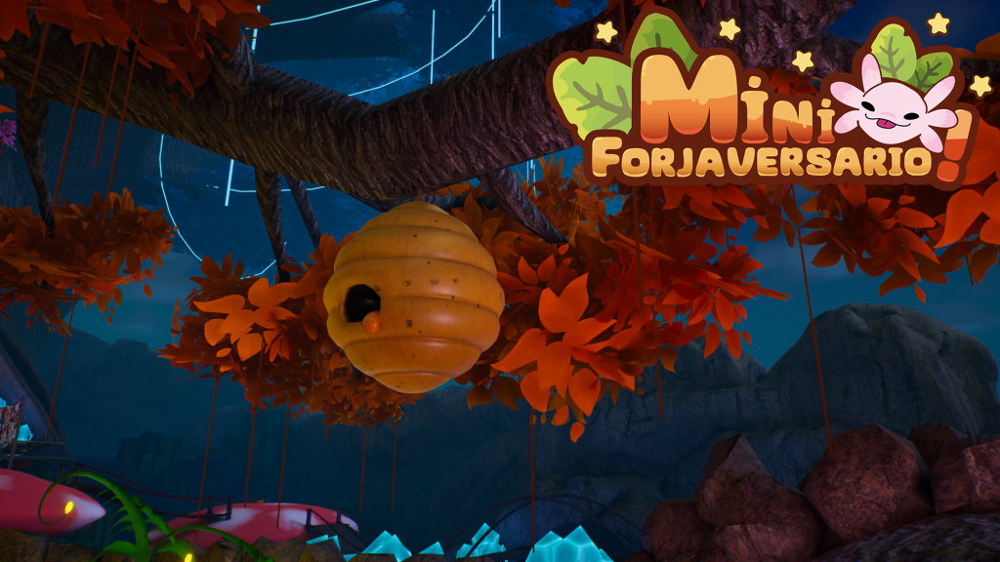
2024 · 3ª Edición
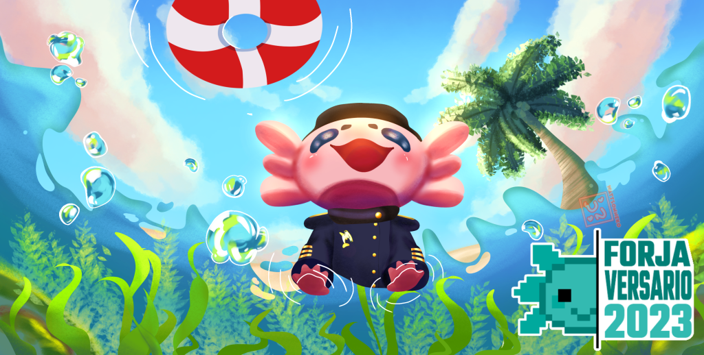
2023 · 2ª Edición
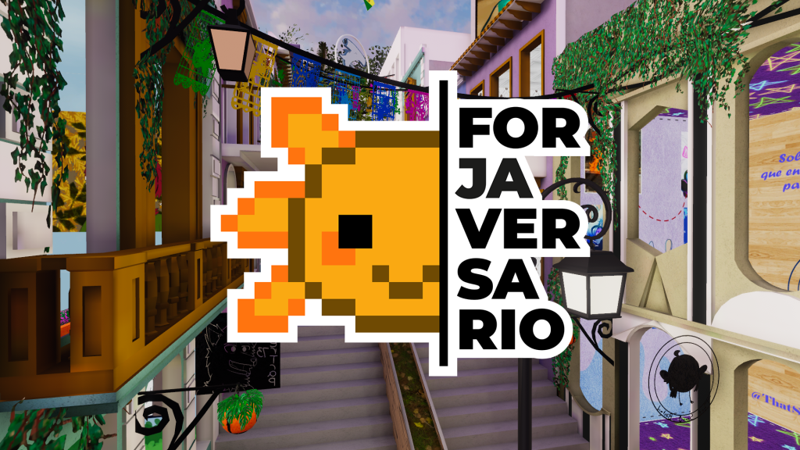
2022 · 1ª Edición